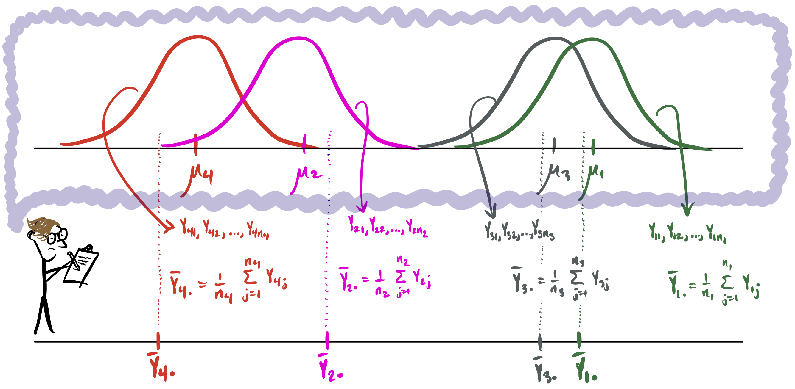
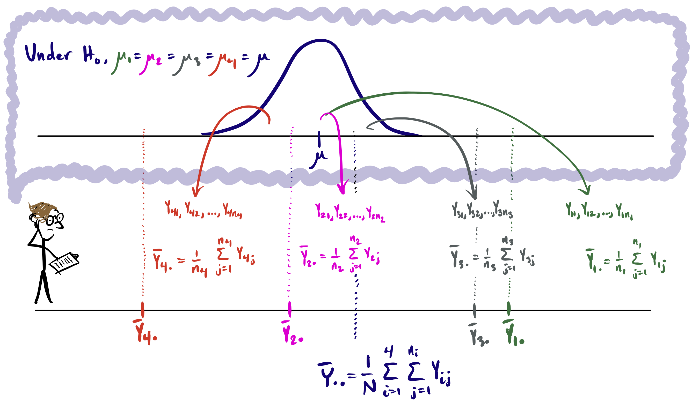
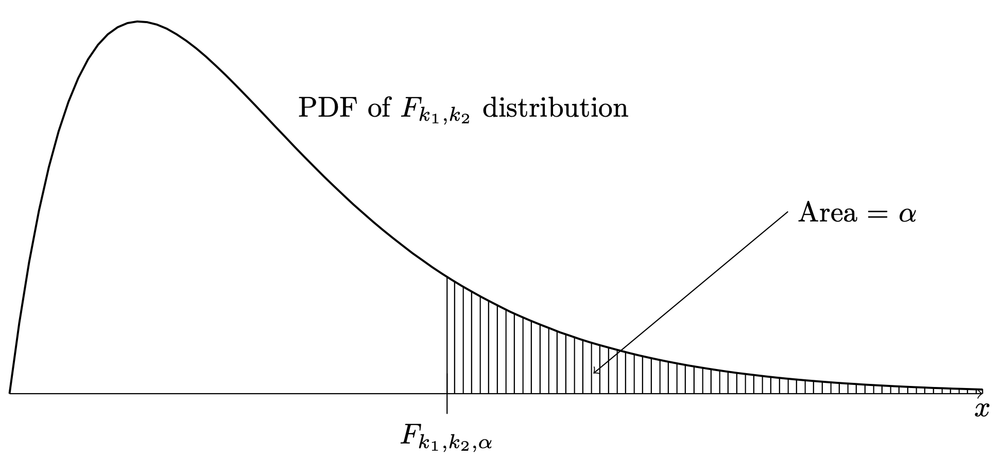
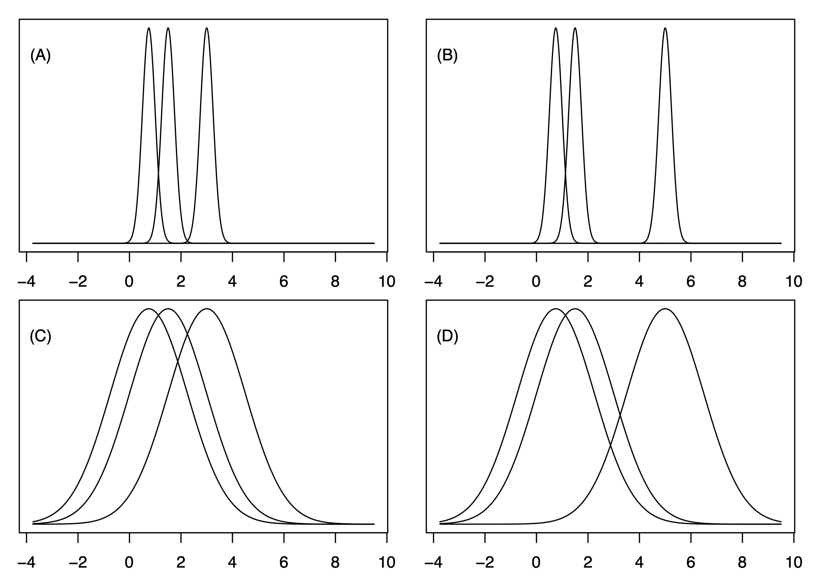

Here we will consider how to analyze data collected in an experiment in which subjects are randomly assigned to be placed under certain experimental conditions. We will first define some terms:
Treatment: Any condition imposed by the investigator is called a treatment.
Experimental unit (EU): we generically refer to each subject in the study, whether a person, object, animal, or other entity, as an experimental unit.
Response: The outcome which we measure on each experimental unit after administering the treatment is called the response.
Example 40.1 (Steak packaging) This example is taken from Kuehl (2000). Twelve steaks were randomly assigned (three each) to four different packaging conditions (Commercial, Vacuum, Mixed Gas, CO\(_2\)). After 9 days at 4\(^{\circ}\) C, the number of bacteria per cm\(^2\) over the surface of the steak was recorded. Of interest is whether “some form of controlled gas atmosphere would provide a more effective packaging environment (than commercial or vacuum) for meat storage”. The raw data are presented here:
Steak
Packaging
\(\log(\# \text{bact}/\text{cm}^2)\)
1
Commercial
7.66
6
Commercial
6.98
7
Commercial
7.80
12
Vacuum
5.26
5
Vacuum
5.44
3
Vacuum
5.80
10
Mixed Gas
7.41
9
Mixed Gas
7.33
2
Mixed Gas
7.04
8
CO\(_2\)
3.51
4
CO\(_2\)
2.91
11
CO\(_2\)
3.66
The experimental units are the steaks, the treatments are the four packaging types, and the response is the natural logarithm of the number of bacteria per cm\(^2\) over the surface of each steak.
It is natural to compute the means of each treatment group and to compare them:
Packaging
Mean of \(\log(\# \text{bact}/\text{cm}^2)\)
Commercial
7.48
Vacuum
5.50
Mixed Gas
7.26
CO\(_2\)
3.36
From this table, it looks like the packaging with \(CO_2\) achieved the least bacterial growth. However, we know by now that need to do a more rigorous analysis than just looking at the sample means. If we were to repeat this experiment with \(12\) different steaks, we would get different response values and different treatment means. The question is, to what extent do the treatment means differ because of true differences in the packaging methods and to what extent do they differ because of experimental variability? We address these questions in the following with a view to hypothesis testing.
40.1 The cell means model
In statistics we often try to make sense of where our data come from by writing down a mathematical expression for each value. We call this expression a model, and it is supposed to describe the mechanism working in the background to produce the data we observe. Writing down a model for our data helps us to formulate testable hypotheses which match our research questions. For the data in #exm-steak, a model called the cell means model or the one-way ANOVA model is often posited as the mechanism through which the response values come to be.
Before we can write down the cell means model, we need to define some quantities pertaining to a comparative experiment:
Let \(K\) denote the number of treatments.
Let \(n_1,\dots,n_K\) denote the numbers of EUs assigned to treatments \(1,\dots,K\), respectively.
Let \(N = n_1 + \dots + n_K\) denote the total number of EUs.
Let \(Y_{ij}\) denote the response of the \(j\)th experimental unit of the \(i\)th treatment group for \(j=1,\dots,n_i\) and \(i=1,\dots,K\).
Now we can define the cell means model.
Definition 40.1 (Cell means or one-way ANOVA model) The cell means or one-way ANOVA model assumes \[
Y_{ij} = \mu_i + \varepsilon_{ij}, \quad \varepsilon_{ij} \overset{\text{ind}}{\sim}\mathcal{N}(0,\sigma^2)
\tag{40.1}\] for \(j=1,\dots,n_i\) and \(i = 1,\dots,K\), where
\(\mu_1,\dots,\mu_K\) are the treatment group means.
\(\varepsilon_{ij}\) is called an error term and represents the deviation of the response \(Y_{ij}\) from the mean of treatment group \(i\).
By the expression \(\varepsilon_{ij} \overset{\text{ind}}{\sim}\mathcal{N}(0,\sigma^2)\) it is meant that all the error terms \(\varepsilon_{ij}\) are independent from one another and each one has a Normal distribution centered at zero with variance \(\sigma^2\). The independence of the \(\varepsilon_{ij}\) means that the value of one does not affect the value of any other one.
Under the cell means or one-way ANOVA model, it is typically of interest to estimate the population treatment means \(\mu_1,\dots,\mu_K\) and to test hypotheses about them. Natural estimators of \(\mu_1,\dots,\mu_K\) are given by \[
\bar Y_{i.} = \frac{1}{n_i}\sum_{j=1}^{n_i} Y_{ij}, \quad i=1,\dots,K,
\] which are the means of the responses in the treatment groups (placing a `\(.\)’ in the subscript in the place of an index over which a sum has been taken is a common convention).
In Example 40.1 with the steaks, we have \(K=4\) for the four packaging types, \(n_1=n_2=n_3=n_4=3\), since three steaks were assigned to each treatment, and the total number of experimental units is \(N = n_1 + n_2 + n_3 + n_4 = 12\). We then have the responses \(Y_{11} = 7.66, Y_{12} = 6.98, \dots, Y_{43} = 3.66\). The means of the treatment groups are \(\bar Y_{1.} = 7.48\), \(\bar Y_{2.} = 5.50\), \(\bar Y_{3.} = 7.26\), and \(\bar Y_{4.} = 3.36\).
Figure 40.1 depicts the cell means model with \(K=4\) treatments.

Figure 40.1: Cell means model in the mind of the investigator.
In the cell means model the investigator imagines data coming from \(K\) different distributions such that the distributions are centered at the population treatment means \(\mu_1,\dots,\mu_K\). Moreover, each distribution is Normal and all have the same variance, which is the variance \(\sigma^2\) of the error term in the cell means model. The sample treatment means \(\bar Y_{1.},\dots,\bar Y_{K.}\) are the investigator’s guesses from the observed data at the unknown values of \(\mu_1,\dots,\mu_K\).
40.2 Hypothesis testing in the cell means model
In comparative experiments, the foremost research question is: Do/does any of the treatments affect the response? We can formulate this question in the following null and alternate hypotheses: \[
\begin{align*}
H_0\text{:} \quad&\mu_1 = \dots= \mu_K \\
H_1\text{:} \quad&\mu_i \neq \mu_{i'} \quad \text{ for some } \quad i \neq i',
\end{align*}
\] where the interpretation of the alternate hypothesis is that not all the treatment means are equal (there is at least one pair of means which do not have the same value).
As we have previously done, we will test these hypotheses by computing a test statistic; once we have the test statistic we can compare it to a critical value or get a \(p\)-value from it in order to decide whether or not to reject \(H_0\).
We may gather intuition for constructing a test statistic by picturing the cell means model under the null hypothess \(H_0\): \(\mu_1=\dots=\mu_K\). Returning to our example in which \(K=4\), the investigator now imagines all the data coming from a single distribution as in Figure 40.2.

Figure 40.2: Cell means model under \(H_0\): \(\mu_1 = \dots = \mu_K\) in the mind of the investigator.
A new quantity which we may call the overall mean is introduced in the above picture. If it is assumed that all responses in all the treatment groups really come from a single distribution centered at a common mean \(\mu\), then a sensible estimator of the common mean is the mean of all the responses pooled together, which we write as \[
\bar Y_{..} = \frac{1}{N}\sum_{i=1}^K\sum_{j=1}^{n_i} Y_{ij}.
\] In Example 40.1 with the steaks, we have \[
\bar Y_{..} = \frac{1}{12}(7.66 + 6.89 + \dots 3.66) = 5.9.
\] We now wish to construct a test statistic which gauges how much evidence the data carries against the null hypothesis. What would cast doubt on \(H_0\)? The more spread out the treatment means \(\bar Y_{1.},\dots,\bar Y_{K.}\) the more implausible \(H_0\) becomes. So our test statistic should measure the spread of our treatment means \(\bar Y_{1.},\dots,\bar Y_{K.}\) and, under the null hypothesis, it should have a known probability distribution which allows us to look up a \(p\)-value.
The following result gives us some direction.
Proposition 40.1 (Idealized test statistic assuming \(\sigma\) known) Under the cell means model in Definition 40.1 under \(H_0\): \(\mu_1=\dots=\mu_K\), we have \[
W_{\operatorname{test}} = \sum_{i=1}^K\left(\frac{\bar Y_{i.} - \bar Y_{..}}{\sigma/\sqrt{n_i}}\right)^2 \sim \chi_{K-1}^2.
\tag{40.2}\]
Recall that \(\chi_{K-1}^2\) in the above denotes the chi-squared distribution with degrees of freedom equal to \(K-1\).
The quantity in the above result measures how spread out the treatment means are, as it is the sum of squared deviations of the treatment means from the overall mean divided by \(\sigma/\sqrt{n}\). The larger this quantity is, the more implausible is \(H_0\). Moreover, this quantity has a known distribution under \(H_0\), which means we can find \(p\)-values; that is, we can find the probability, assuming that \(H_0\) is true, of getting a larger value (carrying more evidence against \(H_0\)) of this quantity than the value we observed. The problem is that \(\sigma^2\) is unknown, so we cannot compute this quantity from the data.
Define the estimator \(\hat \sigma^2\) of \(\sigma^2\) as \[
\hat \sigma^2 = \frac{1}{N-K}\sum_{i=1}^K\sum_{j=1}^{n_i} \hat \varepsilon_{ij}^2, %\quad \text{ where } \quad \hat \varepsilon_{ij} = Y_{ij} - \bar Y_{i.}, j=1,\dots,n_i, i = 1,\dots,K.
\] where \(\hat \varepsilon_{ij} = Y_{ij} - \bar Y_{i.}\), \(j=1,\dots,n_i\), \(i = 1,\dots,K\) are the deviations of the responses from their treatment means. These deviations are called residuals. The residuals \(\hat \varepsilon_{ij}\) are like the sample version of the noise or error terms \(\varepsilon_{ij}\), and the above formula uses them to estimate the variance \(\sigma^2\).
For Example 40.1 with the steaks, the residuals are shown in the rightmost column of the table below:
Steak
Packaging
\(\log(\# \text{bact}/\text{cm}^2)\)
\(\bar{Y}_{i.}\)
\(\hat{\varepsilon}_{ij}\)
1
Commercial
7.66
7.48
0.18
6
Commercial
6.98
7.48
-0.50
7
Commercial
7.80
7.48
0.32
12
Vacuum
5.26
5.50
-0.24
5
Vacuum
5.44
5.50
-0.06
3
Vacuum
5.80
5.50
0.30
10
Mixed Gas
7.41
7.26
0.15
9
Mixed Gas
7.33
7.26
0.07
2
Mixed Gas
7.04
7.26
-0.22
8
CO\(_2\)
3.51
3.36
0.15
4
CO\(_2\)
2.91
3.36
-0.45
11
CO\(_2\)
3.66
3.36
0.30
Using the residuals in the table, we would compute \(\hat \sigma^2\) as \[
\hat \sigma^2 = \frac{1}{12 - 4}\left[(0.18)^2 + (-0.50)^2 + \dots + (0.30)^2\right] = 0.11585.
\] Then we have \(\hat \sigma = 0.34037\).
We find that when we replace \(\sigma\) with \(\hat \sigma\) in Equation 40.2, the resulting quantity no longer has a chi-squared distribution. Instead, if we rescale the quantity properly, it will have a distribution called an \(F\) distribution. Recall that when we previously replaced \(\sigma\) with \(S_n\) in the standardization of a sample mean the result had a \(t\) distribution instead of a standard normal distribution. Here, when we replace \(\sigma\) with \(\hat \sigma\), we have a (scaled) \(F\) distribution instead of a chi-squared distribution. We next introduce the \(F\) distributions.
40.3 The \(F\) distributions
The \(F\) distributions are right-skewed distributions and are indexed by two parameters called the numerator degrees of freedom and the denominator degrees of freedom. Figure 40.3 plots the PDFs of several F distributions.
Figure 40.3: PDF of \(F\) distribution at several pairs of numerator and denominator degrees of freedom parameter values.
Definition 40.2 (F distributions) For each \(k_1 > 0\) and \(k_2 > 0\), the probability distribution with PDF given by \[
f(x;k_1,k_2) = \left\{\begin{array}{ll}\frac{\Gamma(\frac{k_1 + k_2}{2})}{\Gamma(\frac{k_1}{2})\Gamma(\frac{k_2}{2})}\Big(\frac{k_1}{k_2}\Big)^{k_1/2}x^{(k_1-2)/2}\Big(1 + \frac{k_1}{k_2}x \Big)^{-(k_1 + k_2)/2}, & x \geq 0 \\
0,&x < 0\\
\end{array}\right.
\] is called the \(F\) distribution with numerator degrees of freedom \(k_1\) and denominator degrees of freedom \(k_2\), where \(\Gamma(a)=\int_0^\infty u^{a-1}e^{-u}du\) for \(a>0\) is the gamma function.
If a random variable \(R\) has the \(F\) distribution with numerator degrees of freedom \(k_1\) and denominator degrees of freedom \(k_2\) we will write \(R \sim F_{k_1,k_2}\). Here the letter “\(R\)” was used since an \(F\)-distributed random variable arises as a ratio of independent chi-squared random variables, each divided by the value of its degrees of freedom parameter. Formally:
Proposition 40.2 (\(F\) distribution construction) Let \(W_1 \sim\chi_{k_1}^2\) and \(W_2\sim \chi_{k_2}^2\) be independent chi-squared random variables with degrees of freedom \(k_1\) and \(k_2\), respectively. Then \[
R = \frac{W_1/k_1}{W_2/k_2}\sim F_{k_1,k_2}.
\]
Just as we have defined upper quantiles for the standard Normal distribution, the \(t\) distributions, and the chi-squared distributions, we define, for each \(\alpha \in (0,1)\), the value \(F_{k_1,k_2,\alpha}\) as the value such that \(P(R > F_{k_1,k_2,\alpha}) = \alpha\), where \(R \sim F_{k_1,k_2}\). The quantity \(F_{k_1,k_2,\alpha}\) thus admits the depiction in Figure 40.4.

Figure 40.4: Definition of upper \(\alpha\) quantile \(F_{k_1,k_2,\alpha}\) of the \(F_{k_1,k_2}\) distribution.
Now the next result presents a feasible test statistic (“feasible” meaning that we can actually compute it from the data) which has a distribution called an \(F\) distribution.
Proposition 40.3 (Distribution of F-statistic under null hypothesis) Assuming the cell means model in Definition 40.1, under \(H_0\): \(\mu_1=\dots=\mu_K\) we have \[
F_{\operatorname{test}}= \frac{1}{K-1}\sum_{i=1}^K\Big(\frac{\bar Y_{i.} - \bar Y_{..}}{\hat \sigma/\sqrt{n_i}}\Big)^2 \sim F_{K-1,N - k}.
\]
The above result tells us that a size-\(\alpha\) test can be defined with the rejection rule: \[
\text{Reject $H_0$: $\mu_1 = \dots = \mu_K$ if $F_{\operatorname{test}}> F_{K-1,N-K,\alpha}$}
\] The \(p\) value of this test is given by \(P(R > F_{\operatorname{test}})\), where \(R\sim F_{K-1,N-K}\), that is the area under the PDF of the \(F_{K-1,N-K}\) distribution to the right of \(F_{\operatorname{test}}\).
For Example 40.1 with the steaks, we have \[
\begin{align*}
F_{\operatorname{test}}&= \frac{1}{4-1}\Big[ \Big(\frac{7.48 - 5.9}{0.34037/\sqrt{3}}\Big)^2+
\dots+
\Big(\frac{3.36 - 5.9}{0.34037/\sqrt{3}}\Big)^2 \Big]\\
&=94.58296.
\end{align*}
\]
Since there are \(K=4\) treatments and \(N=12\) experimental units, we compare the value of \(F_{\operatorname{test}}\) to the upper \(\alpha\) quantile of the \(F\) distribution with numerator degrees of freedom \(4-1=3\) and denominator degrees of freedom \(12-4=8\). For \(\alpha = 0.01\) we have \(F_{3,8,0.01} = 7.59\). This number can be obtained with qf(0.99,3,8) in R. Since \(F_{\operatorname{test}}=94.58 > F_{3,8,0.01} = 7.59\) we reject the null hypothesis at significance level \(0.01\) and conclude that the means are not all equal.
The \(p\)-value is the probability \(P(R > 94.58)\) where \(R \sim F_{3,8}\), which we can obtain using 1 - pf(94.58,3,8) in R. We obtain \(1.375902\times 10^{-6}\) If the assumptions of the cell means model are satisfied for the steaks example, then the small \(p\) value indicates very strong evidence against the null hypothesis of equal treatment means. We would conclude at any significance level \(\alpha\) greater than \(1.376128\times 10^{-6}\) that the packaging makes a difference in the mean number of bacteria that grow on the surface of refrigerated steaks.
40.4 Analysis of variance (ANOVA)
The analysis of variance or ANOVA table decomposes the so-called total variation in the responses \(Y_{ij}\), \(j=1,\dots,n_i\), \(i=1,\dots,K\) into two parts:
Between-treatment variation: variability in the responses due to the treatment effects.
Within-treatment variation: variability in the responses due to differences among the experimental units.
We will express the total variability in the response values through the quantity \[
\operatorname{SS}_{\operatorname{Tot}}= \sum_{i=1}^K\sum_{j=1}^{n_i}(Y_{ij} - \bar Y_{..})^2,
\] which we will call the total sum of squares. This quantity is the sum of squared deviations of the responses from the overall mean \(\bar Y_{..}\). The ANOVA approach decomposes this quantity into the treatment sum of squares\[
\operatorname{SS}_{\operatorname{Trt}}=\sum_{i=1}^K n_i(\bar Y_{i.} - \bar Y_{..})^2
\] and the error sum of squares\[
\operatorname{SS}_{\operatorname{Error}}= \sum_{i=1}^K\sum_{j=1}^{n_i}(Y_{ij} - \bar Y_{i.})^2.
\] Verily it can be shown that \[
\underbrace{\operatorname{SS}_{\operatorname{Tot}}}_{\text{Total}} = \underbrace{\operatorname{SS}_{\operatorname{Trt}}}_{\text{Between}} + \underbrace{\operatorname{SS}_{\operatorname{Error}}}_{\text{Within}},
\] where \(\operatorname{SS}_{\operatorname{Trt}}\) represents between-treatment variation and \(\operatorname{SS}_{\operatorname{Error}}\) represents within-treatment variation. For these quantities, we have the following result:
Proposition 40.4 (Chi-squared distributions of scaled sums of squares) Under the cell means model in Definition 40.1 under \(H_0\): \(\mu_1=\dots=\mu_K\), we have \[
\begin{align*}
\operatorname{SS}_{\operatorname{Tot}}/\sigma^2 &\sim \chi_{N-1}^2 \\
\operatorname{SS}_{\operatorname{Trt}}/\sigma^2 &\sim \chi_{K-1}^2\\
\operatorname{SS}_{\operatorname{Error}}/\sigma^2 &\sim \chi_{N-K}^2.
\end{align*}
\] Moreover \(\operatorname{SS}_{\operatorname{Trt}}\) and \(\operatorname{SS}_{\operatorname{Error}}\) are independent.
We find that we can construct our test statistic \(F_\text{test}\) in terms of these quantities; that is we have \[
F_{\operatorname{test}}= \frac{1}{K-1}\sum_{i=1}^K\Big(\frac{\bar Y_{i.} - \bar Y_{..}}{\hat \sigma_\varepsilon/\sqrt{n_i}}\Big)^2 = \frac{\operatorname{SS}_{\operatorname{Trt}}/(K-1)}{\operatorname{SS}_{\operatorname{Error}}/(N-K)},
\] such that the test statistic \(F_{\operatorname{test}}\) is the ratio of between-to-within-treatment variability. Let us give names to the quantities in the numerator and denominator of the last expression; that is, let \[
\begin{align*}
\operatorname{MS}_{\operatorname{Trt}}&= \operatorname{SS}_{\operatorname{Trt}}/ (K-1)\\
\operatorname{MS}_{\operatorname{Error}}&= \operatorname{SS}_{\operatorname{Error}}/ (N-K),
\end{align*}
\] and let us call these, respectively, the treatment mean square and the error mean square (or commonly the mean squared error). Then in the end we may write \[
F_{\operatorname{test}}= \frac{\operatorname{MS}_{\operatorname{Trt}}}{\operatorname{MS}_{\operatorname{Error}}} \quad \Big(= \frac{\text{Between-treatment variation}}{\text{Within-treatment variation}}\Big).
\] If the treatment means are very spread out relative to the spread of the responses in each treatment group, the test statistic \(F_{\operatorname{test}}\) will be large, and its \(p\) value will be small. If the treatment means are close together relative to the spread of the responses in each treatment group, the test statistic \(F_{\operatorname{test}}\) will be small, and its \(p\) value will be large.
Exercise 40.1 (Between versus within treatment variation) Consider the three probability density functions depicted in each panel of the following figure as the distributions of the responses in a cell means or one-way ANOVA model with \(K = 3\) treatments.

Suppose a randomized experiment is conducted for testing the hypotheses \(H_0\): \(\mu_1 = \mu_2 = \mu_3\) versus \(H_1\): not all means are equal.
Of the settings depicted in the four panels, from which would we expect the largest value of the test statistic \(F\)?1
Of the settings depicted in the four panels, from which would we expect the smallest value of the test statistic \(F_{\operatorname{test}}\)? 2
Which two settings are likely to result in greater measures of between-treatment variation \(\operatorname{MS}_{\operatorname{Trt}}\) than the other two?3
Which two settings are likely to result in greater measures of within-treatment variation \(\operatorname{MS}_{\operatorname{Error}}\) than the other two?4
But what about the table? The ANOVA table is a conventional format in which to present the several quantities introduced in this section. The ANOVA table for the cell means model looks like this:
Source
Df
SS
MS
F
p value
Treatment
\(K-1\)
\(\operatorname{SS}_{\operatorname{Trt}}\)
\(\operatorname{MS}_{\operatorname{Trt}}\)
\(F_{\operatorname{test}}\)
\(P(F > F_{\operatorname{test}})\)
Error
\(N-K\)
\(\operatorname{SS}_{\operatorname{Error}}\)
\(\operatorname{MS}_{\operatorname{Error}}\)
Total
\(N-1\)
\(\operatorname{SS}_{\operatorname{Tot}}\)
In the table \(P(F > F_{\operatorname{test}})\) is computed under \(F \sim F_{K-1,N-k}\). For the steaks example, the ANOVA table is.
Analysis of Variance Table
Response: bacteria
Df Sum Sq Mean Sq F value Pr(>F)
packaging 3 32.873 10.9576 94.584 1.376e-06 ***
Residuals 8 0.927 0.1159
---
Signif. codes: 0 '***' 0.001 '**' 0.01 '*' 0.05 '.' 0.1 ' ' 1
Note that R arranges the columns in the ANOVA table somewhat differently and does not provide the bottom row. We will see that ANOVA tables appear in other contexts as well; they are not intended solely for the cell-means model.
40.5 Checking model assumptions
Implicit in the cell means model of Definition 40.1 are the following assumptions:
Assumption 1
The responses are normally distributed around the treatment means.
Assumption 2
The responses have the same variance in all treatment groups.
Assumption 3
The responses are independent from each other.
Here we consider how to check each assumption in turn.
To check Assumption 1 we typically look at a normal Q-Q plot (see Chapter 19) of the residuals \(\hat \varepsilon_{ij}\). The residuals are the deviations of the responses around the sample treatment means, so they are the sample version of the error terms \(\varepsilon_{ij}\), which are assumed in the cell means model to have the \(\mathcal{N}(0,\sigma^2)\) distribution. If the responses are normally distributed around the treatment means, the residuals should therefore exhibit normality in the normal Q-Q plot. Figure 40.5 shows a normal Q-Q plot of the residuals for the steak packaging example. As the points lie somewhat close to the straight line, it appears safe to assume that the response values in the steak example are normally distributed around the treatment means.
plot(lm_out, which =2)
Figure 40.5: Normal Q-Q plot of the residuals in the steak packaging data.
To check Assumption 2 we typically look at a plot called the residuals versus fitted values plot. In this plot, the residuals of the observations in each treatment group are plotted on the vertical axis against the treatment means such that the spread of the residuals across the treatment groups can be compared. If the responses have the same variance in all the treatment groups then the spread of the residuals should be the same across the treatment groups. Figure 40.6 shows the residuals versus fitted values plot for the steak packaging example. It is difficult to see whether the spread of the residuals is the same in all four treatment groups, as there are only three experimental units in each group, but the spreads are not drastically different, so it appears safe to assume that the assumption holds.
plot(lm_out, which =1)
Figure 40.6: Residuals versus fitted values plot for the steak packaging data.
Assumption 3 really cannot be checked from the data; however, the random assignment of the experimental units to the treatment groups and proper control of experimental conditions can ensure that the responses are independent from each other.
Kuehl, R. O. 2000. Design of Experiments: StatisticalPrinciples of ResearchDesign and Analysis. Duxbury/Thomson Learning.
The setting in panel (B) exhibits large between-treatment variation and small within-treatment variation, so we would expect from it the largest value of the test statistic \(F_{\operatorname{test}}\).↩︎
The setting in panel (C) exhibits small between-treatment variation and large within-treatment variation, so we would expect it to produce the smallest value of the test statistic \(F_{\operatorname{test}}\).↩︎
The settings in panels (B) and (D) exhibit larger between-treatment variation than the other two panels, so we would expect them to produce larger values of \(\operatorname{MS}_{\operatorname{Trt}}\).↩︎
The settings in panels (C) and (D) exhibit larger within-treatment variation than the other two panels, so we would expect them to produce larger values of \(\operatorname{MS}_{\operatorname{Error}}\).↩︎